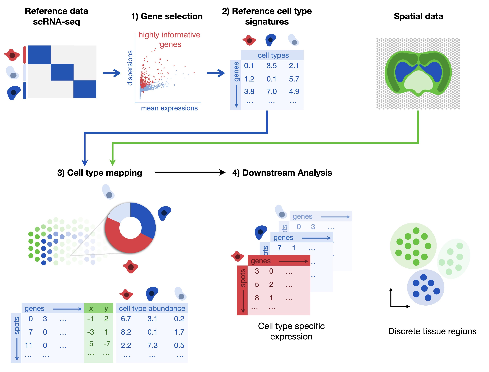
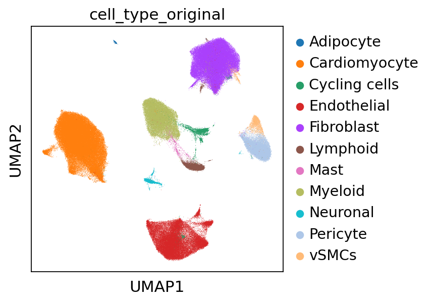
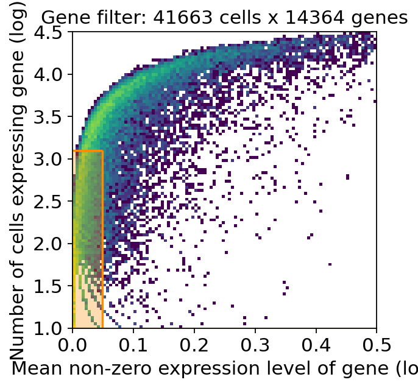
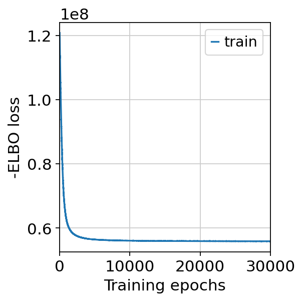
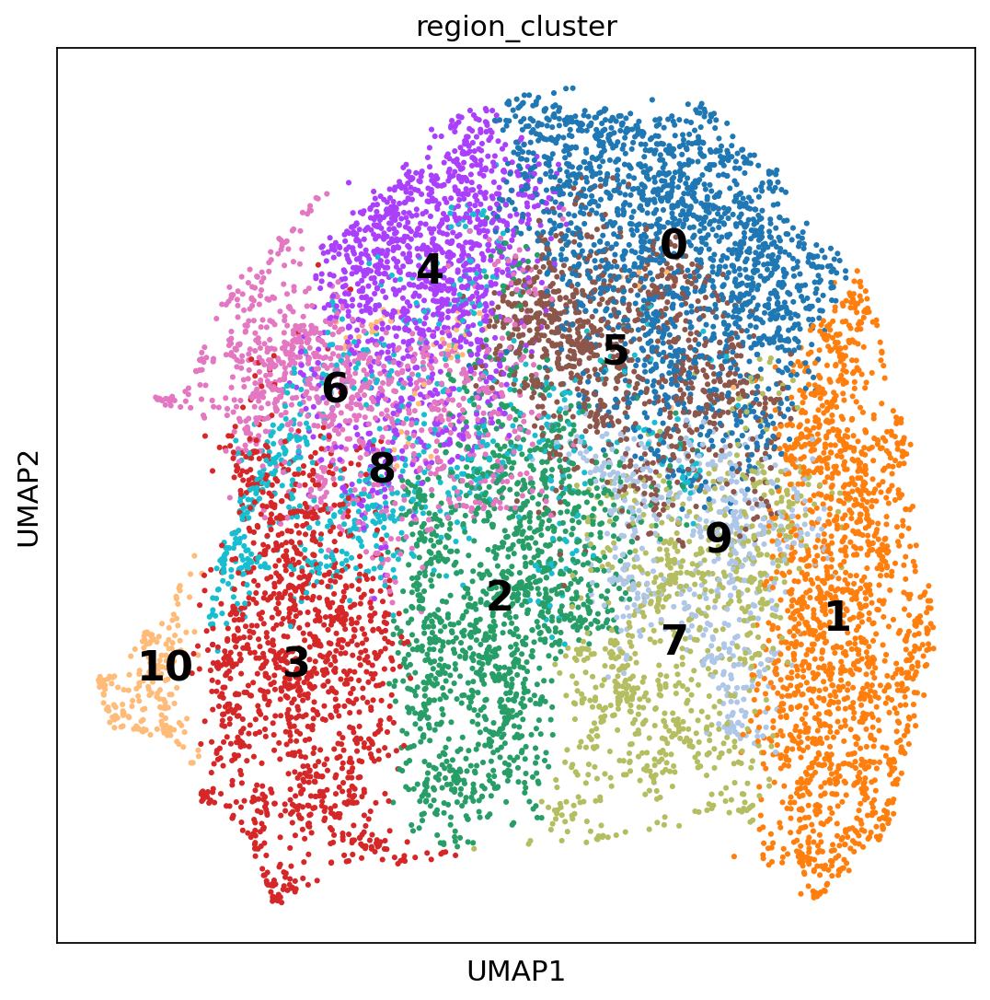

32. 空间反卷积#
关键要点
基于参考的反卷积方法可用于提高基于点（spot）的空间转录组学数据的分辨率。
在细胞类型反卷积上，cell2location 的表现优于其他方法，但需要更多计算资源。
其他可选模型有 SpatialDWLS 和 RCTD，它们在整体准确度得分方面表现最佳。
环境设置
安装 conda:
在创建环境之前，请确保 conda 已安装在您的系统中。
保存 yml 内容:
将 yml 选项卡中的内容复制到名为
environment.yml的文件中。
创建环境:
打开终端或命令提示符。
运行以下命令：
conda env create -f environment.yml
激活环境:
创建好环境后，使用以下命令激活它：
conda activate <environment_name>
替换
<environment_name>，名称就是在environment.yml文件中指定的那个。在 yml 文件里，它看起来像这样：name: <environment_name>
验证安装:
通过运行以下命令，检查环境是否创建成功：
conda env list
name: spatial
channels:
- defaults
- conda-forge
dependencies:
- conda-forge::python=3.12.12
- conda-forge::scanpy=1.12
- conda-forge::leidenalg
- conda-forge::pytorch-cpu
- conda-forge::pip
- pip:
- squidpy==1.8.1
- SpaGCN==1.2.7
- SpatialDE==1.1.3
- tangram-sc==1.0.4
- cell2location==0.1.5
32.1. 动机#
基于点（spot）的空间转录组学数据，在经典的解离单细胞 RNA 测序读出之上额外加入了空间位置信息。它虽然仍以测序为基础、因而在基因层面没有偏倚，但现有方法并不具备单细胞分辨率。例如，Visium——最初的空间转录组学（Spatial Transcriptomics）方案的商业版本——其捕获区域为直径 55 µm 的圆形区域。根据组织和空间位置的不同，会有多个细胞映射到同一个捕获区域。此外，单细胞也可能只有一部分落在捕获区域内，这又进一步造成它与我们处理经典 scRNA-seq 数据时所熟悉的表达谱之间的差异。
由于我们关心的生物学实体是单细胞，我们希望把观测到的空间表达谱重新分离（demix）回单细胞的信号。这一过程称为反卷积（deconvolution）。反卷积有多种形式：最简单的是为每个空间位置分配各细胞类型的比例；更复杂的做法还会识别细胞类型内部的变异。由于空间数据本身并不能给出明确的细胞类型概念，反卷积方法通常依赖一个单细胞参考（reference）。
把参考数据与空间数据对齐的方式有很多种，其中一种非常流行的方法是进行概率映射（probabilistic mapping）：推断混合参数，使得单细胞表达谱的组合能够与空间表达相匹配。
在本教程中，我们将更详细地介绍两种方法——Stereoscope [Andersson et al., 2020] 和cell2location [Kleshchevnikov et al., 2022]，并为其中之一提供一个实用教程。我们还会列举其他几种在遇到反卷积问题时值得一试的方法。
32.2. 反卷积的更数学化描述#
空间反卷积是一种相当复杂的方法，需要对其底层原理有一定了解。本节旨在解释这一任务背后的数学概念。只关心如何在实践中应用反卷积的读者，可以直接跳到下面这一节 实践中的cell2location.
在空间转录组学中，观测到的转录组可以用一个潜变量模型（latent variable model）来描述。观测到的计数 \(x_{sg}\) 对应基因 \(g\) 和点 \(s\) ，等于属于该点的各细胞贡献 \(x_{sig}\) 之和：
如果忽略细胞类型内部的变异性，反卷积问题就简化为识别各细胞类型的计数，也就是推断每个点（spot）中某种细胞类型出现的频次 \(\tilde \beta_{st}\) ：
其中 \(t(i)\) 是细胞 \(i\) 的细胞类型，而 \(c_{tg}\) 是原型表达谱（prototype expression profiles）。注意，求和从对各个细胞 \(i\) 求和，变为对不同的细胞类型集合 \(t \in \{1, \dots, C\}\)参数 \(\tilde \beta_{st}\) 统计某种细胞类型在一个点（spot）中出现的频次。通过对该点的文库大小做归一化 \(l_s\),该计数向量可以更改以指示细胞类型比例:
识别细胞类型比例的问题 \(\beta_{st}\) 并不容易求解。原因之一是一个数据集中点（spot）的数量有限，通常为 3–5k，却要同时测量人类基因组中几乎所有的蛋白质编码基因， \(> 20\text{k}\).
使用参考 scRNA-seq 测量数据是缓解这一问题的好办法。它们的单细胞分辨率使我们能够计算原型表达谱 \(\boldsymbol{c}_{t}\)。已知这些原型后，上述问题便简化为求各个点（spot）内部的细胞类型比例 \(\beta_{st}\) 。当然，只有当我们可以假设 scRNA-seq 表达谱能够代表空间实验中测得的计数时，这种跨技术的迁移才是合理的。理想情况下，两个实验是在同一张组织切片上进行的。
在过去两年里，人们提出了多种方法来解决空间转录组学数据中的反卷积问题。其中包括 Stereoscope [Andersson et al., 2020], DestVI [Lopez et al., 2022], RCTD [Cable et al., 2022], SPOTlight [Elosua-Bayes et al., 2021]，以及 Cell2Location [Kleshchevnikov et al., 2022] 下面我们将以它为例进行更详细的介绍。
32.2.1. Stereoscope#
Stereoscope [Andersson et al., 2020] 是一种基于参考的反卷积模型，它使用负二项分布来同时对单细胞和空间转录组的表达数据建模。它做了一个简化假设：同一细胞类型的细胞，其基因表达是恒定的——不仅在单个点（spot）内如此，而且在整个数据集的全局范围内都如此：
Stereoscope 把上面的表达式作为负二项分布的速率参数，并在此基础上引入了两个额外参数。首先，为了刻画不同基因依赖于技术的捕获效率，它们引入了捕获效率参数 \(e_g\)。此外，它们还引入了负二项分布的第二个参数——成功概率 \(p_g\)。这个参数被认为在基因之间共享（这确保了 \(NB\) 分布在求和下是封闭的）：
表达谱 \(c_{tg}\) 以及成功概率 \(p_g\) 则由参考数据集的细胞表达 \(y_{ig}\) 得到：
其中 \(d_c = \sum_{g = 1}^G y_{ig}\) 是计数深度，即一个细胞转录本的总数。
作为一种技术性调整，为每个点（spot）额外设置一个虚拟（dummy）细胞类型，以刻画由于底层细胞类型差异而在不同技术之间产生的加性偏移。最终的 Stereoscope 模型变为：
32.2.2. Cell2location#
另一个使用负二项分布的反卷积模型是 cell2location [Kleshchevnikov et al., 2022]。与 Stereoscope 不同，它使用负二项分布的均值参数化。每种细胞类型的细胞计数直接通过均值来建模 \(\mu_{sg}\) 以及离散度 \(a_g\),它也在基因之间共享。此外，技术参数 \(l_s\), \(e_g\) 和 \(\epsilon_g\) ，与 Stereoscope 中一样，用于刻画乘性偏移和加性偏移：
注意，cell2location 还会考虑因使用跨多个批次采集的数据而带来的批次效应和技术效应。为了便于比较这里展示的几个模型，本节不考虑这一点。
为了对参数进行正则化，cell2location 大量使用了先验（prior），这些先验被设计为尽量贴合其生物学含义。空间模型和参考模型的所有参数都带有某种形式的先验，并以分层（hierarchical）的方式构建。也就是说，先验分布的参数本身又有先验。具体细节可参见原论文的补充材料。
一个特别有趣的建模假设是，细胞类型的丰度 \(\beta_{st}\) 本身被建模为细胞类型原型的线性组合 \(\rho_{r}\) （或组织原型）。这些原型被建模为按一定比例分布在切片上 \(\pi_s\)。这用一个带有（固定）先验强度参数的伽马先验（gamma prior）来表示 \(v\):
作为一种基于参考的模型，cell2location 同样依赖 scRNA-seq 测量来获得细胞类型表达谱 \(\boldsymbol{c}_t\)。其单细胞模型与 Stereoscope 的相当相似，但采用均值参数化，并进一步纳入了技术参数 \(\hat{\epsilon}_g\):
这里展示的分层模型的后验（posterior）都难以解析求解。因此，cell2location 使用变分推断（variational inference）来推断完整的后验。
32.3. 实践中的 cell2location#
独立基准[Li et al., 2022] 结果表明，在模拟数据集上，cell2location 在细胞类型反卷积方面优于其他方法，但需要更多计算资源。在真实数据集上，基于四种不同准确度指标的整体准确度得分，SpatialDWLS 和 RCTD 表现最佳。
此处展示的教程部分参考了以下来源中提供的教程： cell2location文档。与其他反卷积方法相比，cell2location 需要更多计算资源，尤其是在包含大量细胞和细胞类型的大型数据集上。这里展示的教程是在可使用 GPU 的环境下运行的。
我们这里使用的数据集，用 10x Visium 测量了人类心肌梗死的不同生理区域、不同时间点，以及人类对照心肌的情况 [Kuppe et al., 2022]。Kuppe 等人还用 snRNA-seq 对单细胞基因表达进行了分析，我们将在本教程中把它用作参考数据集。
{kind=link}

图32.1 cell2location 需要一个单核或单细胞 RNA-seq 参考数据集，首先在其上用较宽松的阈值做基因选择。第二步，估计参考数据集中各细胞类型的特征（signature）。默认模型是负二项回归，它能稳健地整合跨技术、跨批次的数据。除参考数据集外，还需要一个包含一个或多个批次的空间数据集。第三步则是用 cell2location 进行真正的细胞类型映射，估计每个点（spot）中各细胞类型的丰度。学到的丰度以及每个点上按细胞类型的特异表达，随后可用于下游分析任务。#
我们从导入包开始
import cell2location as c2l
import matplotlib
import scanpy as sc
import squidpy as sq
sc.settings.verbosity = 3
sc.settings.set_figure_params(dpi=80, facecolor="white")
[rank: 0] Global seed set to 0
32.3.1. 空间和单细胞数据的预处理#
让我们首先查看本教程将要用到的两个数据集。我们先从空间数据集开始——我们从 Kuppe 等人的数据中选取了四个对照样本[Kuppe et al., 2022].
adata_st = sc.read(
filename="kuppe_visium_human_heart_2022_control.h5ad",
backup_url="https://figshare.com/ndownloader/files/39347357",
)
adata_st
try downloading from url
https://figshare.com/ndownloader/files/39347357
... this may take a while but only happens once
AnnData object with n_obs × n_vars = 11725 × 36601
obs: 'in_tissue', 'array_row', 'array_col', 'patient', 'patient_region_id', 'patient_group', 'major_label', 'batch'
var: 'gene_ids', 'feature_types', 'genome'
uns: 'spatial'
obsm: 'spatial'
我们可以使用 Squidpy 及其 pl.spatial_scatter 函数来检查数据集及相关的四张图片。
sq.pl.spatial_scatter(adata_st, library_key="patient_region_id")
{kind=link}
该函数会为数据集中每张组织学图像返回一张图。每个样本都来自对照组中的一位患者，仅从图像表现来看就已经差别很大。
接下来，我们加载参考数据集。这里，我们使用同样由 Kuppe 等人发表的单核 RNA 测序数据。 [Kuppe et al., 2022] ，在四位对照患者中共测量了 41,663 个细胞核。
adata_sc = sc.read(
filename="kuppe_snRNA_human_heart_2022_control.h5ad",
backup_url="https://figshare.com/ndownloader/files/39347573",
)
adata_sc
try downloading from url
https://figshare.com/ndownloader/files/39347573
... this may take a while but only happens once
AnnData object with n_obs × n_vars = 41663 × 29046
obs: 'sample', 'n_counts', 'n_genes', 'percent_mito', 'doublet_score', 'dissociation_score', 'patient_region_id', 'donor_id', 'patient_group', 'major_labl', 'assay', 'disease', 'organism', 'sex', 'tissue', 'self_reported_ethnicity', 'development_stage', 'cell_type', 'cell_type_original'
var: 'feature_is_filtered', 'feature_name', 'feature_reference', 'feature_biotype'
uns: 'X_approximate_distribution', 'batch_condition', 'cell_type_colors', 'cell_type_original_colors', 'default_embedding', 'schema_version', 'title'
obsm: 'X_harmony', 'X_pca', 'X_umap'
layers: 'counts', 'normalized_counts'
对照参考数据集已经过处理，并标注了识别出的细胞类型。我们将在整个笔记本中沿用其原始的细胞类型标签，并重置 adata_sc.X 为存储在 layers 中的原始计数。
此外，我们还可以查看存储下来的 UMAP 嵌入中的数据，以便更直观地看到参考数据中包含哪些细胞类型。
adata_sc.X = adata_sc.layers["counts"]
sc.pl.umap(adata_sc, color="cell_type_original")
/home/icb/anna.schaar/miniconda3/envs/deconvolution_book/lib/python3.9/site-packages/scanpy/plotting/_tools/scatterplots.py:392: UserWarning: No data for colormapping provided via 'c'. Parameters 'cmap' will be ignored
cax = scatter(
{kind=link}

我们观察到的细胞类型包括：脂肪细胞（adipocyte）、心肌细胞（cardiomyocyte）、循环细胞（cycling cell）、内皮细胞（endothelial）、成纤维细胞（fibroblast）、淋巴系（lymphoid）、肥大细胞（mast）、髓系（myeloid）、神经元（neuronal）、周细胞（pericyte）和血管平滑肌细胞（vSMC）。cell2location 旨在依据上述细胞类型，对空间数据中的各个点（spot）进行反卷积。
为进行反卷积，cell2location 需要把 ENSEMBL 基因标识符存储在 adata_st.var_names 中，以便在单细胞数据与空间数据之间精确映射。下面我们来检查当前是否已满足这一点：
adata_st.var.head()
| gene_ids | feature_types | genome | |
|---|---|---|---|
| MIR1302-2HG | ENSG00000243485 | Gene Expression | GRCh38 |
| FAM138A | ENSG00000237613 | Gene Expression | GRCh38 |
| OR4F5 | ENSG00000186092 | Gene Expression | GRCh38 |
| AL627309.1 | ENSG00000238009 | Gene Expression | GRCh38 |
| AL627309.3 | ENSG00000239945 | Gene Expression | GRCh38 |
我们可以看到 adata_st.var_names 是特征名称，而不是 ENSEMBL 基因标识符。因此，我们会将这些特征名称保存到一个新的列中 adata_st.var ，并用基因标识符替换 var 的索引。
adata_st.var["feature_name"] = adata_st.var_names
adata_st.var.set_index("gene_ids", drop=True, inplace=True)
正如我们所见，ENSEMBL 基因标识符现在已正确存储在 adata_st.var_names.
adata_st.var.head()
| feature_types | genome | feature_name | |
|---|---|---|---|
| gene_ids | |||
| ENSG00000243485 | Gene Expression | GRCh38 | MIR1302-2HG |
| ENSG00000237613 | Gene Expression | GRCh38 | FAM138A |
| ENSG00000186092 | Gene Expression | GRCh38 | OR4F5 |
| ENSG00000238009 | Gene Expression | GRCh38 | AL627309.1 |
| ENSG00000239945 | Gene Expression | GRCh38 | AL627309.3 |
在用 cell2location 进行空间映射之前，建议先从数据集中移除线粒体基因，因为它们反映的是技术性假象，而非线粒体真实的生物学丰度。这里使用的数据集来自人类，因此线粒体基因以如下前缀编码 MT-。我们可以将所有线粒体基因子集并移动到 .obsm['MT'] 以确保它们仍然可用，以防在任何其他下游分析中需要它们。
# find mitochondrial (MT) genes
adata_st.var["MT_gene"] = [
gene.startswith("MT-") for gene in adata_st.var["feature_name"]
]
# remove MT genes for spatial mapping (keeping their counts in the object)
adata_st.obsm["MT"] = adata_st[:, adata_st.var["MT_gene"].values].X.toarray()
adata_st = adata_st[:, ~adata_st.var["MT_gene"].values]
接下来，我们把两个数据集都取到相同的基因集合上，这是单细胞数据与空间数据之间进行映射的基础。
shared_features = [
feature for feature in adata_st.var_names if feature in adata_sc.var_names
]
adata_sc = adata_sc[:, shared_features].copy()
adata_st = adata_st[:, shared_features].copy()
32.3.2. 拟合参考模型#
运行 cell2location 的第一步，是拟合参考模型来估计参考细胞类型特征。为确保参考质量较高，cell2location 建议进行非常宽松的基因选择。为此，可以使用如下函数 filter_genes 带有默认参数 cell_count_cutoff=5, cell_percentage_cutoff2=0.03, nonz_mean_cutoff=1.12。这些参数是一个良好的起点，但也可以根据手头的数据集进行调整。有关如何选择这些过滤参数的更多信息，请查看cell2location的文档。
selected = c2l.utils.filtering.filter_genes(
adata_sc, cell_count_cutoff=5, cell_percentage_cutoff2=0.03, nonz_mean_cutoff=1.12
)
/home/icb/anna.schaar/miniconda3/envs/deconvolution_book/lib/python3.9/site-packages/pandas/core/arraylike.py:402: RuntimeWarning: divide by zero encountered in log10
result = getattr(ufunc, method)(*inputs, **kwargs)
{kind=link}

相应的函数会返回一个二维直方图，其中橙色矩形标出根据所设阈值被排除的基因。Y 轴表示表达该基因的细胞数量，X 轴表示检测到该基因的细胞的平均 RNA 计数。
现在，我们可以将这两个 AnnData 对象都取子集，只保留选定的基因：
adata_sc = adata_sc[:, selected].copy()
adata_st = adata_st[:, selected].copy()
cell2location 使用负二项回归模型，从参考数据中估计特征（signature），该模型还能够考虑批次效应和额外的分类协变量。我们传入 donor_id and the assay 在本教程中作为批次（batch）和协变量传入。 setup_anndata 会创建真正用于训练模型的数据对象。
c2l.models.RegressionModel.setup_anndata(
adata=adata_sc,
batch_key="donor_id",
labels_key="cell_type_original",
categorical_covariate_keys=["assay"],
layer="counts",
)
No GPU/TPU found, falling back to CPU. (Set TF_CPP_MIN_LOG_LEVEL=0 and rerun for more info.)
现在，我们可以训练该回归模型并估计参考细胞类型特征。默认的训练轮数（epoch）为 max_epochs=250，可能需要增大该值，才能在手头的数据集上实现收敛。
此外，我们可能会检查 batch_size=2500 ，相比 scvi-tools 中的其他默认值要大得多，并且 train_size=1 用于对数据集中所有的细胞进行训练。
model = c2l.models.RegressionModel(adata_sc)
# default, try on GPU:
use_gpu = True
model.train(max_epochs=250, batch_size=2500, train_size=1, lr=0.002, use_gpu=use_gpu)
/home/icb/anna.schaar/miniconda3/envs/deconvolution_book/lib/python3.9/site-packages/lightning_fabric/plugins/environments/slurm.py:166: PossibleUserWarning: The `srun` command is available on your system but is not used. HINT: If your intention is to run Lightning on SLURM, prepend your python command with `srun` like so: srun python /home/icb/anna.schaar/miniconda3/envs/deconvolution_ ...
rank_zero_warn(
GPU available: True (cuda), used: True
TPU available: False, using: 0 TPU cores
IPU available: False, using: 0 IPUs
HPU available: False, using: 0 HPUs
/home/icb/anna.schaar/miniconda3/envs/deconvolution_book/lib/python3.9/site-packages/lightning_fabric/plugins/environments/slurm.py:166: PossibleUserWarning: The `srun` command is available on your system but is not used. HINT: If your intention is to run Lightning on SLURM, prepend your python command with `srun` like so: srun python /home/icb/anna.schaar/miniconda3/envs/deconvolution_ ...
rank_zero_warn(
/home/icb/anna.schaar/miniconda3/envs/deconvolution_book/lib/python3.9/site-packages/pytorch_lightning/trainer/configuration_validator.py:106: UserWarning: You passed in a `val_dataloader` but have no `validation_step`. Skipping val loop.
rank_zero_warn("You passed in a `val_dataloader` but have no `validation_step`. Skipping val loop.")
LOCAL_RANK: 0 - CUDA_VISIBLE_DEVICES: [0]
Epoch 250/250: 100%|██████████████████| 250/250 [13:19<00:00, 3.14s/it, v_num=1, elbo_train=2.95e+8]
`Trainer.fit` stopped: `max_epochs=250` reached.
Epoch 250/250: 100%|██████████████████| 250/250 [13:19<00:00, 3.20s/it, v_num=1, elbo_train=2.95e+8]
通过检查训练历史，可以判断模型是否需要更多训练。这张图应当呈下降趋势并最终趋于平稳，否则就需要增大 max_epochs 参数。
model.plot_history(20)
{kind=link}
通过观察训练历史，我们确实看到损失曲线在下降并逐渐趋于平稳。这表明模型已经收敛。
下一步，cell2location 通过把学到的细胞丰度导出到 anndata 对象来总结后验分布。具体来说，它会计算参考数据集中每种细胞类型表达特征的 5%、50% 和 95% 分位数。
model.export_posterior(
adata_sc,
sample_kwargs={"num_samples": 1000, "batch_size": 2500, "use_gpu": use_gpu},
)
Sampling local variables, batch: 0%| | 0/17 [00:01<?, ?it/s]
Sampling global variables, sample: 100%|██████████████████████████| 999/999 [00:09<00:00, 103.17it/s]
AnnData object with n_obs × n_vars = 41663 × 14364
obs: 'sample', 'n_counts', 'n_genes', 'percent_mito', 'doublet_score', 'dissociation_score', 'patient_region_id', 'donor_id', 'patient_group', 'major_labl', 'assay', 'disease', 'organism', 'sex', 'tissue', 'self_reported_ethnicity', 'development_stage', 'cell_type', 'cell_type_original', '_indices', '_scvi_batch', '_scvi_labels'
var: 'feature_is_filtered', 'feature_name', 'feature_reference', 'feature_biotype', 'n_cells', 'nonz_mean'
uns: 'X_approximate_distribution', 'batch_condition', 'cell_type_colors', 'cell_type_original_colors', 'default_embedding', 'schema_version', 'title', '_scvi_uuid', '_scvi_manager_uuid', 'mod'
obsm: 'X_harmony', 'X_pca', 'X_umap', '_scvi_extra_categorical_covs'
varm: 'means_per_cluster_mu_fg', 'stds_per_cluster_mu_fg', 'q05_per_cluster_mu_fg', 'q95_per_cluster_mu_fg'
layers: 'counts', 'normalized_counts'
cell2location 提供了一个用于检查模型拟合质量的函数。它会生成两张图，分别展示：
重建准确度。这张图中大多数观测应当分布在一条带噪声的对角线附近。
估计出的表达特征，其观测也应主要分布在对角线附近。
model.plot_QC()
{kind=link}
{kind=link}
在质量控制图中可以看到，重建准确度和估计的表达特征大致都形成一条对角线。现在我们可以继续分析，并提取推断出的细胞类型特征。对于随后的空间映射，cell2location 需要每种细胞类型中估计出的基因表达。
# export estimated expression in each cluster
if "means_per_cluster_mu_fg" in adata_sc.varm.keys():
inf_aver = adata_sc.varm["means_per_cluster_mu_fg"][
[f"means_per_cluster_mu_fg_{i}" for i in adata_sc.uns["mod"]["factor_names"]]
].copy()
else:
inf_aver = adata_sc.var[
[f"means_per_cluster_mu_fg_{i}" for i in adata_sc.uns["mod"]["factor_names"]]
].copy()
inf_aver.columns = adata_sc.uns["mod"]["factor_names"]
inf_aver.head()
| Adipocyte | Cardiomyocyte | Cycling cells | Endothelial | Fibroblast | Lymphoid | Mast | Myeloid | Neuronal | Pericyte | vSMCs | |
|---|---|---|---|---|---|---|---|---|---|---|---|
| feature_id | |||||||||||
| ENSG00000237491 | 0.345130 | 0.087746 | 0.132866 | 0.026051 | 0.076892 | 0.022174 | 0.040034 | 0.037086 | 0.041302 | 0.026012 | 0.059664 |
| ENSG00000228794 | 0.311184 | 0.854350 | 0.055324 | 0.044600 | 0.045747 | 0.051093 | 0.071472 | 0.048005 | 0.055801 | 0.040259 | 0.082158 |
| ENSG00000188976 | 0.127703 | 0.162105 | 0.104626 | 0.017800 | 0.082823 | 0.040612 | 0.026912 | 0.038888 | 0.019028 | 0.033144 | 0.064095 |
| ENSG00000187642 | 0.058162 | 0.513303 | 0.014339 | 0.010231 | 0.006430 | 0.003457 | 0.029488 | 0.009087 | 0.003172 | 0.007707 | 0.007055 |
| ENSG00000188290 | 0.061855 | 0.122690 | 0.017265 | 0.083241 | 0.069586 | 0.013826 | 0.019374 | 0.008620 | 0.053345 | 0.413005 | 0.512525 |
如果你要在同一参考数据集下对多张切片进行反卷积，那么把各细胞类型的特征保存下来可能是合理的做法。
inf_aver.to_csv("inf_aver.csv")
32.3.3. cell2location细胞类型映射#
接下来，我们可以为真正的空间映射准备数据，使用 setup_anndata 用于 cell2location 模型。
c2l.models.Cell2location.setup_anndata(
adata=adata_st,
batch_key="patient",
)
cell2location需要两个用户提供的超参数(N_cells_per_location 和 detection_alpha).
N_cells_per_locationN_cells_per_location 描述每个位置或点（spot）中预期的细胞丰度。这通常可以通过配对的组织学图像获得。在本教程中，我们将取N_cells_per_location=8。detection_alpha用于刻画切片/批次内 RNA 检测灵敏度的技术性变异。RNA 检测灵敏度的技术性变异同样可以基于组织学检查来估计。更多信息请分析者参阅 cell2location 的文档。默认值为detection_alpha=20.
cell2location提供了如何确定模型超参数的详细说明，可访问 此处.
model = c2l.models.Cell2location(
adata_st,
cell_state_df=inf_aver,
N_cells_per_location=8,
)
model.view_anndata_setup()
Anndata setup with scvi-tools version 0.20.0.
Setup via `Cell2location.setup_anndata` with arguments:
{ │ 'layer': None, │ 'batch_key': 'patient', │ 'labels_key': None, │ 'categorical_covariate_keys': None, │ 'continuous_covariate_keys': None }
Summary Statistics ┏━━━━━━━━━━━━━━━━━━━━━━━━━━┳━━━━━━━┓ ┃ Summary Stat Key ┃ Value ┃ ┡━━━━━━━━━━━━━━━━━━━━━━━━━━╇━━━━━━━┩ │ n_batch │ 4 │ │ n_cells │ 11725 │ │ n_extra_categorical_covs │ 0 │ │ n_extra_continuous_covs │ 0 │ │ n_labels │ 1 │ │ n_vars │ 14364 │ └──────────────────────────┴───────┘
Data Registry ┏━━━━━━━━━━━━━━┳━━━━━━━━━━━━━━━━━━━━━━━━━━━┓ ┃ Registry Key ┃ scvi-tools Location ┃ ┡━━━━━━━━━━━━━━╇━━━━━━━━━━━━━━━━━━━━━━━━━━━┩ │ X │ adata.X │ │ batch │ adata.obs['_scvi_batch'] │ │ ind_x │ adata.obs['_indices'] │ │ labels │ adata.obs['_scvi_labels'] │ └──────────────┴───────────────────────────┘
batch State Registry ┏━━━━━━━━━━━━━━━━━━━━━━┳━━━━━━━━━━━━┳━━━━━━━━━━━━━━━━━━━━━┓ ┃ Source Location ┃ Categories ┃ scvi-tools Encoding ┃ ┡━━━━━━━━━━━━━━━━━━━━━━╇━━━━━━━━━━━━╇━━━━━━━━━━━━━━━━━━━━━┩ │ adata.obs['patient'] │ P1 │ 0 │ │ │ P7 │ 1 │ │ │ P8 │ 2 │ │ │ P17 │ 3 │ └──────────────────────┴────────────┴─────────────────────┘
labels State Registry ┏━━━━━━━━━━━━━━━━━━━━━━━━━━━┳━━━━━━━━━━━━┳━━━━━━━━━━━━━━━━━━━━━┓ ┃ Source Location ┃ Categories ┃ scvi-tools Encoding ┃ ┡━━━━━━━━━━━━━━━━━━━━━━━━━━━╇━━━━━━━━━━━━╇━━━━━━━━━━━━━━━━━━━━━┩ │ adata.obs['_scvi_labels'] │ 0 │ 0 │ └───────────────────────────┴────────────┴─────────────────────┘
我们现在可以训练 cell2location 并进行空间映射。我们将使用以下默认参数进行训练： max_epochs=30000, batch_size=None 和 train_size=1 表示所有数据点都用于训练，因为所有点（spot）中都估计了所有细胞丰度。此外，我们可以在拟合模型后再次检查训练历史。训练历史应再次呈下降趋势并趋于平稳，否则就需要增大 max_epochs 也许有帮助。
model.train(max_epochs=30000, batch_size=None, train_size=1, use_gpu=use_gpu)
# plot training history
model.plot_history()
/home/icb/anna.schaar/miniconda3/envs/deconvolution_book/lib/python3.9/site-packages/lightning_fabric/plugins/environments/slurm.py:166: PossibleUserWarning: The `srun` command is available on your system but is not used. HINT: If your intention is to run Lightning on SLURM, prepend your python command with `srun` like so: srun python /home/icb/anna.schaar/miniconda3/envs/deconvolution_ ...
rank_zero_warn(
GPU available: True (cuda), used: True
TPU available: False, using: 0 TPU cores
IPU available: False, using: 0 IPUs
HPU available: False, using: 0 HPUs
/home/icb/anna.schaar/miniconda3/envs/deconvolution_book/lib/python3.9/site-packages/lightning_fabric/plugins/environments/slurm.py:166: PossibleUserWarning: The `srun` command is available on your system but is not used. HINT: If your intention is to run Lightning on SLURM, prepend your python command with `srun` like so: srun python /home/icb/anna.schaar/miniconda3/envs/deconvolution_ ...
rank_zero_warn(
/home/icb/anna.schaar/miniconda3/envs/deconvolution_book/lib/python3.9/site-packages/pytorch_lightning/trainer/configuration_validator.py:106: UserWarning: You passed in a `val_dataloader` but have no `validation_step`. Skipping val loop.
rank_zero_warn("You passed in a `val_dataloader` but have no `validation_step`. Skipping val loop.")
LOCAL_RANK: 0 - CUDA_VISIBLE_DEVICES: [0]
/home/icb/anna.schaar/miniconda3/envs/deconvolution_book/lib/python3.9/site-packages/pytorch_lightning/trainer/trainer.py:1600: PossibleUserWarning: The number of training batches (1) is smaller than the logging interval Trainer(log_every_n_steps=10). Set a lower value for log_every_n_steps if you want to see logs for the training epoch.
rank_zero_warn(
Epoch 30000/30000: 100%|████████| 30000/30000 [1:16:21<00:00, 6.51it/s, v_num=1, elbo_train=5.59e+7]
`Trainer.fit` stopped: `max_epochs=30000` reached.
Epoch 30000/30000: 100%|████████| 30000/30000 [1:16:21<00:00, 6.55it/s, v_num=1, elbo_train=5.59e+7]
{kind=link}

我们再次看到训练历史趋于平稳、模型已收敛。现在，我们可以通过从后验分布中采样，导出每个点（spot）中按细胞类型估计的丰度，并把它保存到空间数据中。
adata_st = model.export_posterior(
adata_st,
sample_kwargs={
"num_samples": 1000,
"batch_size": model.adata.n_obs,
"use_gpu": use_gpu,
},
)
Sampling local variables, batch: 100%|█████████████████████████████████| 1/1 [00:30<00:00, 30.86s/it]
Sampling global variables, sample: 100%|███████████████████████████| 999/999 [00:27<00:00, 36.86it/s]
我们可以再次检查重建的准确性，它应当大致显示出分布在一条带噪声的对角线周围的点。
model.plot_QC()
{kind=link}
我们可以看到重建的精度大致显示为对角，因此我们可以继续分析和检查结果。
现在我们可以把映射到空间坐标上的细胞丰度进行可视化。这里我们使用后验分布的 5% 分位数，它表示模型有较高把握认为至少存在 5%。
adata_st.obs[adata_st.uns["mod"]["factor_names"]] = adata_st.obsm[
"q05_cell_abundance_w_sf"
]
# select one slide for visualization
slide = c2l.utils.select_slide(adata_st, "control_P1", batch_key="patient_region_id")
with matplotlib.rc_context({"figure.figsize": [4.5, 5]}):
sc.pl.spatial(
slide,
cmap="magma",
color=adata_st.uns["mod"]["factor_names"],
ncols=4,
size=1.3,
img_key="hires",
# limit color scale at 99.2% quantile of cell abundance
vmin=0,
vmax="p99.2",
)

人们可以看到，估计的细胞类型丰度因斑点和细胞类型而异。心肌细胞似乎存在于大多数斑点，而一些细胞类型只在少数斑点出现。
我们还可以在同一张图中同时展示多种细胞类型。
clust_col = ["Mast", "Cardiomyocyte", "Endothelial"]
clust_labels = clust_col
with matplotlib.rc_context({"figure.figsize": (15, 15)}):
fig = c2l.plt.plot_spatial(
adata=slide,
color=clust_col,
labels=clust_labels,
max_color_quantile=0.992,
circle_diameter=6,
show_img=True,
colorbar_position="right",
colorbar_shape={"horizontal_gaps": 0.2},
)
{kind=link}
这张图有助于识别各点（spot）中的主要细胞类型，并评估某个点可能主要由哪种细胞类型构成。例如，我们可以观察到大多数点主要由心肌细胞构成，但也有少数点主要由内皮细胞或肥大细胞构成。
32.3.4. 下游分析#
32.3.4.1. 空间数据中每个基因的细胞类型特异表达#
cell2location 还可以计算细胞类型特异表达的后验分布。这一步会提取空间数据中每个空间位置、每个基因的细胞类型特异表达。各细胞类型的特异表达会作为附加层（layer）分别保存到空间数据对象中。
# Compute expected expression per cell type
expected_dict = model.module.model.compute_expected_per_cell_type(
model.samples["post_sample_q05"], model.adata_manager
)
# Add to anndata layers
for i, n in enumerate(model.factor_names_):
adata_st.layers[n] = expected_dict["mu"][i]
我们可以通过指定用于绘图的层（layer）来可视化细胞类型特异表达。这里我们展示心肌细胞的四个基因。
slide = c2l.utils.select_slide(adata_st, "control_P1", batch_key="patient_region_id")
with matplotlib.rc_context({"figure.figsize": [4.5, 5]}):
sq.pl.spatial_scatter(
slide,
color=["NPPB", "XIRP2", "FTH1", "ATP2A2"],
layer="Cardiomyocyte",
alt_var="feature_name",
)
{kind=link}
32.3.4.2. 离散的组织区域#
基于 cell2location 估计出的细胞丰度，我们可以识别出细胞组成相似的组织区域。为此，我们基于 5% 细胞丰度计算一个 KNN 图，并在其连接关系上进行 Leiden 聚类。聚类在所有切片上联合进行，以便在不同样本之间识别出可比的组织区域。
我们将由此得到的聚类结果保存到 adata_vis.obs['region_cluster'].
sc.pp.neighbors(adata_st, use_rep="q05_cell_abundance_w_sf")
sc.tl.leiden(adata_st, resolution=0.5)
adata_st.obs["region_cluster"] = adata_st.obs["leiden"].astype("category")
computing neighbors
finished: added to `.uns['neighbors']`
`.obsp['distances']`, distances for each pair of neighbors
`.obsp['connectivities']`, weighted adjacency matrix (0:00:27)
running Leiden clustering
finished: found 11 clusters and added
'leiden', the cluster labels (adata.obs, categorical) (0:00:01)
现在，我们基于 cell2location 的输出，利用 KNN 图计算一个 UMAP，并在 UMAP 和空间中分别可视化识别出的组织区域。
sc.tl.umap(adata_st, min_dist=0.3, spread=1)
with matplotlib.rc_context({"axes.facecolor": "white", "figure.figsize": [8, 8]}):
sc.pl.umap(
adata_st,
color=["region_cluster"],
size=30,
color_map="RdPu",
ncols=2,
legend_loc="on data",
legend_fontsize=20,
)
computing UMAP
finished: added
'X_umap', UMAP coordinates (adata.obsm) (0:00:11)
/home/icb/anna.schaar/miniconda3/envs/deconvolution_book/lib/python3.9/site-packages/scanpy/plotting/_tools/scatterplots.py:392: UserWarning: No data for colormapping provided via 'c'. Parameters 'cmap' will be ignored
cax = scatter(
{kind=link}

sq.pl.spatial_scatter(adata_st, color="region_cluster", library_key="patient_region_id")
{kind=link}
32.4. 基于参考的反卷积中的更多模型#
DestVI [Lopez et al., 2022] 通过使用神经网络，把复杂的非线性关系纳入潜变量框架。它是第一个能够通过潜变量来刻画数据集中细胞类型表达原型变异的模型。这些思想结合在一起，对一个标准负二项分布的均值进行参数化，并带有依赖于基因的成功概率 \(p_g\) ，与 Stereoscope 中一样。
RCTD [Cable et al., 2022] 是一种基于参考的反卷积模型，它使用泊松分布，而不是更常见的负二项分布。对于参考细胞类型原型，它只是简单地使用每种细胞类型的平均表达。这种直截了当的做法追求最大的稳健性，并在细胞双联体（doublet）的反卷积上表现出特别的潜力。
SPOTlight [Elosua-Bayes et al., 2021] 使用非负矩阵分解（NMF），先把参考数据中的“细胞 × 基因”矩阵分解为两部分。首先是一个“细胞 × 主题”矩阵 \(H\) 以及一个“主题 × 基因”矩阵 \(W\)矩阵 \(W\) 随后被迁移到空间转录组（ST），在那里会推断出一个“点（spot）× 主题”矩阵 \(H'\) 。主题（topic）并不完全等同于细胞类型，因此必须格外小心，确保建模出的是正确的潜在特征。
32.5. 参考文献#
Alma Andersson, Joseph Bergenstråhle, Michaela Asp, Ludvig Bergenstråhle, Aleksandra Jurek, José Fernández Navarro, and Joakim Lundeberg. Single-cell and spatial transcriptomics enables probabilistic inference of cell type topography. Communications Biology, 3(1):565, October 2020. URL: https://doi.org/10.1038/s42003-020-01247-y, doi:10.1038/s42003-020-01247-y.
Dylan M. Cable, Evan Murray, Luli S. Zou, Aleksandrina Goeva, Evan Z. Macosko, Fei Chen, and Rafael A. Irizarry. Robust decomposition of cell type mixtures in spatial transcriptomics. Nature Biotechnology, 40(4):517–526, April 2022. URL: https://doi.org/10.1038/s41587-021-00830-w, doi:10.1038/s41587-021-00830-w.
Marc Elosua-Bayes, Paula Nieto, Elisabetta Mereu, Ivo Gut, and Holger Heyn. SPOTlight: seeded NMF regression to deconvolute spatial transcriptomics spots with single-cell transcriptomes. Nucleic Acids Research, 49(9):e50–e50, February 2021. _eprint: https://academic.oup.com/nar/article-pdf/49/9/e50/37998836/gkab043.pdf. URL: https://doi.org/10.1093/nar/gkab043, doi:10.1093/nar/gkab043.
Vitalii Kleshchevnikov, Artem Shmatko, Emma Dann, Alexander Aivazidis, Hamish W. King, Tong Li, Rasa Elmentaite, Artem Lomakin, Veronika Kedlian, Adam Gayoso, Mika Sarkin Jain, Jun Sung Park, Lauma Ramona, Elizabeth Tuck, Anna Arutyunyan, Roser Vento-Tormo, Moritz Gerstung, Louisa James, Oliver Stegle, and Omer Ali Bayraktar. Cell2location maps fine-grained cell types in spatial transcriptomics. Nature Biotechnology, 40(5):661–671, May 2022. URL: https://doi.org/10.1038/s41587-021-01139-4, doi:10.1038/s41587-021-01139-4.
Christoph Kuppe, Ricardo O. Ramirez Flores, Zhijian Li, Sikander Hayat, Rebecca T. Levinson, Xian Liao, Monica T. Hannani, Jovan Tanevski, Florian Wünnemann, James S. Nagai, Maurice Halder, David Schumacher, Sylvia Menzel, Gideon Schäfer, Konrad Hoeft, Mingbo Cheng, Susanne Ziegler, Xiaoting Zhang, Fabian Peisker, Nadine Kaesler, Turgay Saritas, Yaoxian Xu, Astrid Kassner, Jan Gummert, Michiel Morshuis, Junedh Amrute, Rogier J. A. Veltrop, Peter Boor, Karin Klingel, Linda W. Van Laake, Aryan Vink, Remco M. Hoogenboezem, Eric M. J. Bindels, Leon Schurgers, Susanne Sattler, Denis Schapiro, Rebekka K. Schneider, Kory Lavine, Hendrik Milting, Ivan G. Costa, Julio Saez-Rodriguez, and Rafael Kramann. Spatial multi-omic map of human myocardial infarction. Nature, 608(7924):766–777, August 2022. URL: https://doi.org/10.1038/s41586-022-05060-x, doi:10.1038/s41586-022-05060-x.
Bin Li, Wen Zhang, Chuang Guo, Hao Xu, Longfei Li, Minghao Fang, Yinlei Hu, Xinye Zhang, Xinfeng Yao, Meifang Tang, Ke Liu, Xuetong Zhao, Jun Lin, Linzhao Cheng, Falai Chen, Tian Xue, and Kun Qu. Benchmarking spatial and single-cell transcriptomics integration methods for transcript distribution prediction and cell type deconvolution. Nature Methods, 19(6):662–670, June 2022. URL: https://doi.org/10.1038/s41592-022-01480-9, doi:10.1038/s41592-022-01480-9.
Romain Lopez, Baoguo Li, Hadas Keren-Shaul, Pierre Boyeau, Merav Kedmi, David Pilzer, Adam Jelinski, Ido Yofe, Eyal David, Allon Wagner, Can Ergen, Yoseph Addadi, Ofra Golani, Franca Ronchese, Michael I. Jordan, Ido Amit, and Nir Yosef. DestVI identifies continuums of cell types in spatial transcriptomics data. Nature Biotechnology, 40(9):1360–1369, September 2022. URL: https://doi.org/10.1038/s41587-022-01272-8, doi:10.1038/s41587-022-01272-8.
32.6. 贡献者#
32.6.2. 审阅者#
Lukas Heumos